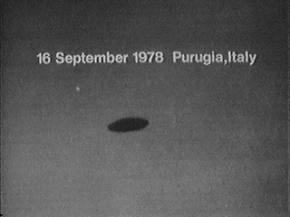

À Menton (Alpes Maritimes), les 3 membres d'une même
famille observent le passage d'une lueur rouge dans le ciel. Celle-ci se déplace lentement entre le Mont
saint-Michel et le Mont Angel. L'observation dure 2 à 3 minutes. Aucune observation ne sera faite par les gendarmes
contactés aussitôt par téléphone GEPAN : PAN classé C.
À Corbeny (Aisne), par temps nuageux, plusieurs
personnes entendent un sifflement provenant du ciel puis un bruit important. Un agriculteur constatera par la suite
que le toit de sa grange a subit des dégats et retrouvera des morceaux de glace blanchâtre plus ou moins gros. Le
diamètre et le poids total du glaçon n'ont pu être déterminés car il s'est brisé en plusieurs morceaux. Certains ont
été pris par des témoins et les autres ont fondu sur le sol sans laisser de traces particulières. Aucun autre fait
semblable ne s'est produit dans la région ce jour-là. Ce phénomène rare est néanmoins connu en météorologie GEPAN : PAN classé A.
Au-dessus de la mer Méditérannée à 140 km de Barcelone
(Espagne), les pilotes d'un avion de ligne observent dans le ciel une lumière itense Document déclassé de la Force Aérienne Espagnole.
Observation près de Turin (Italie)Paperone, Giorgio.
Le soir Observation au nord-est de l'Italie Paperone, Giorgio.
Observation en Italie le 16

Dans la banlieue de San Miguel de Tucuman (Argentine), dans un
magasin polyvalent (et aussi entrepot de grande taille) vide, Miguel Angel Carbajal, le fils du gérant, son ami
Ledesma et un autre ami infirme suivent dans la salle à manger de la maison une émission télévisée. Quelques mois
auparavant, une maison proche du magasin a été bombardée par des pierres d'une manière inexplicable. Petit à petit,
l'image se rétrécit jusqu'à devenir irregardable. Ils éteignent la télévision et branchent un électrophone mais
celui-ci tourne au ralenti sans raison. Convaincus que le réseau électrique souffre d'une baisse de tension ils
allument un petit poste radio portatif : les émissions sont inaudibles. Ils entendent des bruits d'objets tombant
dans le magasin. Pensant à des voleurs, Carbajal et Ledesma mettent leur ami infirme en sécurité hors de la maison,
puis ouvrent la porte du magasin. Des pots de mayonnaise et une bouteille de vin sont brisés sur le sol. Une balance
est elle aussi tombée, vitre cassée. A 6 m d'eux se trouvent 2 êtres d'aspect humanoïde mais de petite taille, vêtus
de combinaisons moulantes, les observant avec une attitude menaçante. 1 des 2 êtres saisi sur un comptoir une caisse
remplie de cartouches de cigarettes et la jette vers les témoins. Puis 1 être lève une main vers son visage :
lorsque son index entre en contact avec son nez, les 2 entités s'évanouissent dans l'air Lecomte, Michael.
Observation (ci-contre) à Purugia (Italie).
Installé sur le toit d'une ferme qu'il restaure dans la Loire (France), un homme de
23 ans observe avec sa femme le passage d'une source lumineuse inhabituelle dans le ciel et a l'impression que
le ronronnement doux qui accompagnait cette lumière est un faux bruit de moteur.
Les ufologues français recoivent, individuellement, une invitation à une
réunion bipartite GEPAN / groupements privés. Si l'objectif officiel est de
présenter le GEPAN aux ufologues, on
annonce plus officieusement qu'il s'agissait d'une sorte de test, pour déterminer avec qui le GEPAN serait le plus susceptible de collaborer.